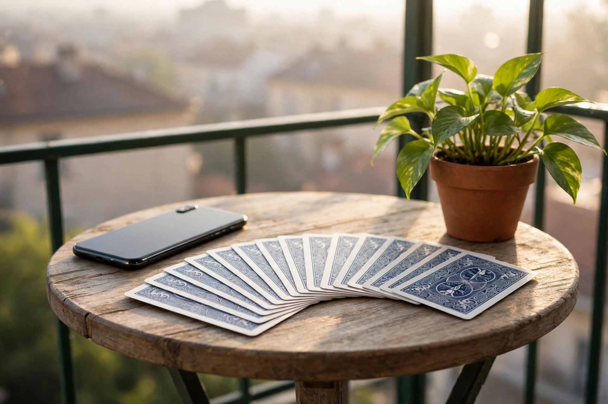

Nobody I know has unlimited evenings. We have a tea break, a commute, the half hour after dinner before the house goes quiet. The players who enjoy rummy for years are not the ones with the most time — they are the ones who match the game to the hour they actually have. These notes, kept alongside my 123 rummy guide, are my simple way of doing that.

Points rummy is one deal, one score, finished. It asks nothing of your evening and gives you a complete little game in return. I play it while the kettle boils. If you are opening the 123 rummy game page for the first time, this is the gentlest door in: the 13 cards arrive, you sort, you play, you are done — and the format forgives a distracted minute like no other.
Deals gives you a fixed number of deals and a winner at the end, which makes it feel like a proper match with a beginning and an end. Half an hour is its natural home. It suits the after-dinner slot in our house: long enough to settle in, short enough that nobody has to check the clock. The habit that helps most here is boring and wonderful — sort your hand the moment the cards land, and re-sort after every draw. A tidy hand is a calm mind.
Pool is the social one. Players drop out one by one, the table shrinks, the conversation grows. It belongs to the evenings when cousins are visiting and nobody is in a hurry. Do not start Pool with twenty minutes in hand; it will punish the rush and reward the linger. This is also the format where watching other people's discards teaches you the most — a free lesson in every round.
Evenings also depend on the phone you own. If your phone is older or nearly full, the lighter listing matters: at 34 MB, the rummy 123 app asks very little of your storage, while the main app at 51 MB carries the fuller set of tables. Both are rated honestly by their players — 4.5/5 and 4.8/5 — and both cover the same three formats. Choose by your phone and your hour, not by habit.
That is the whole method: look at the evening first, then pick the format that fits it. The game should fit into your life the way a good chair fits into a room — without anyone having to move anything else.